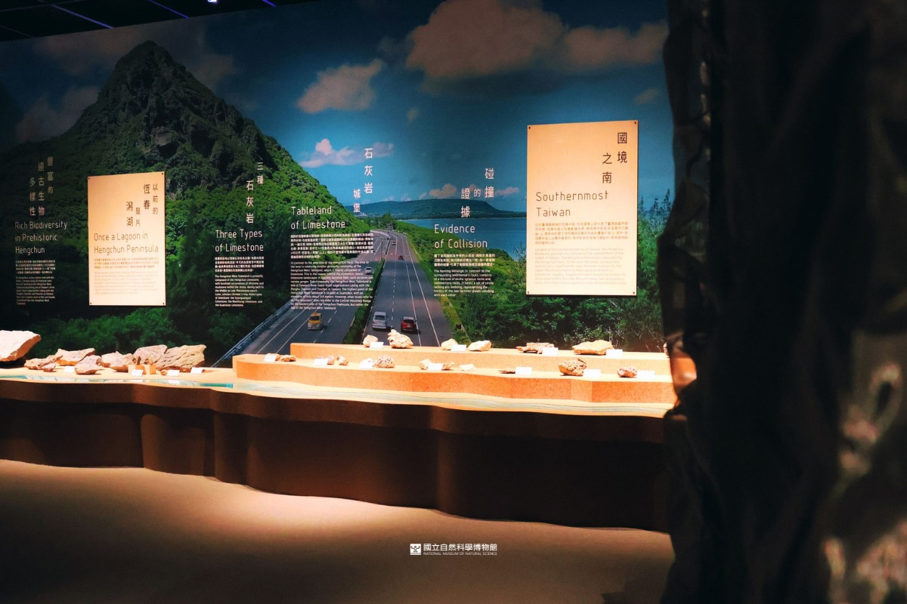
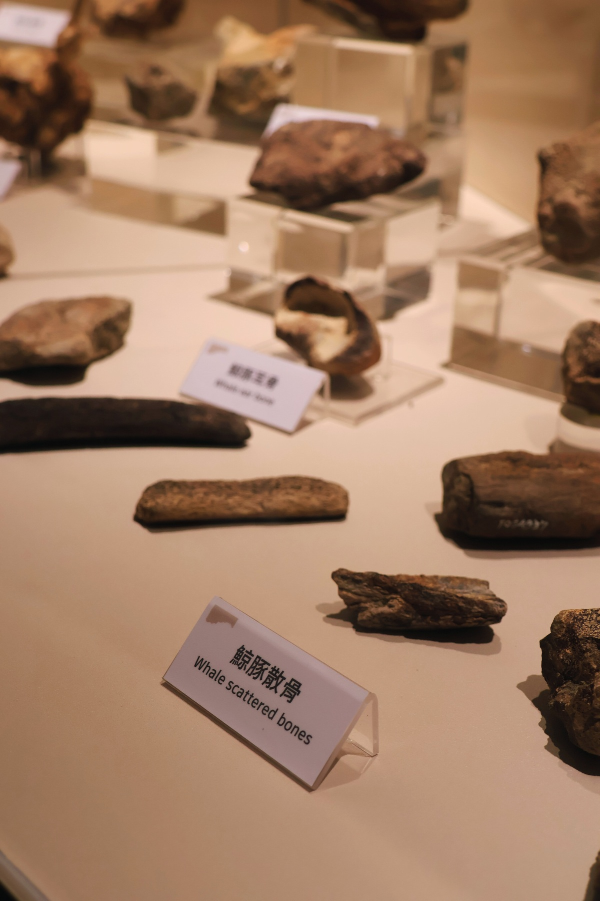
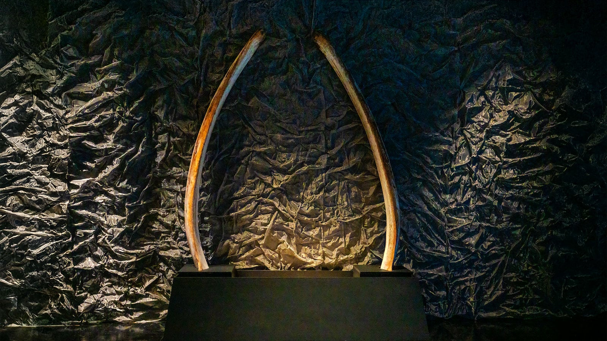
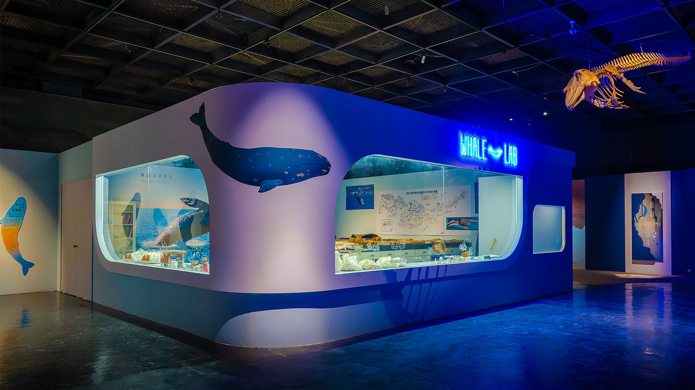
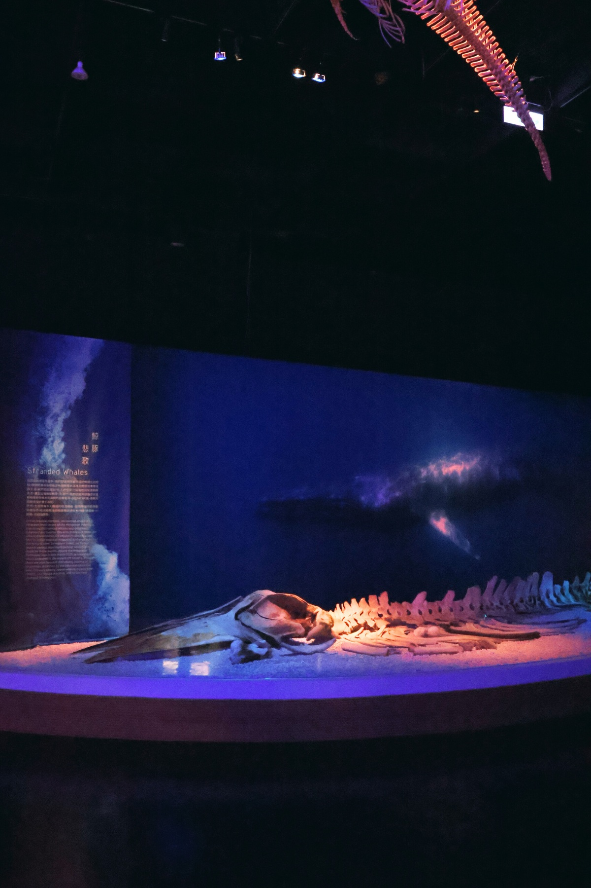
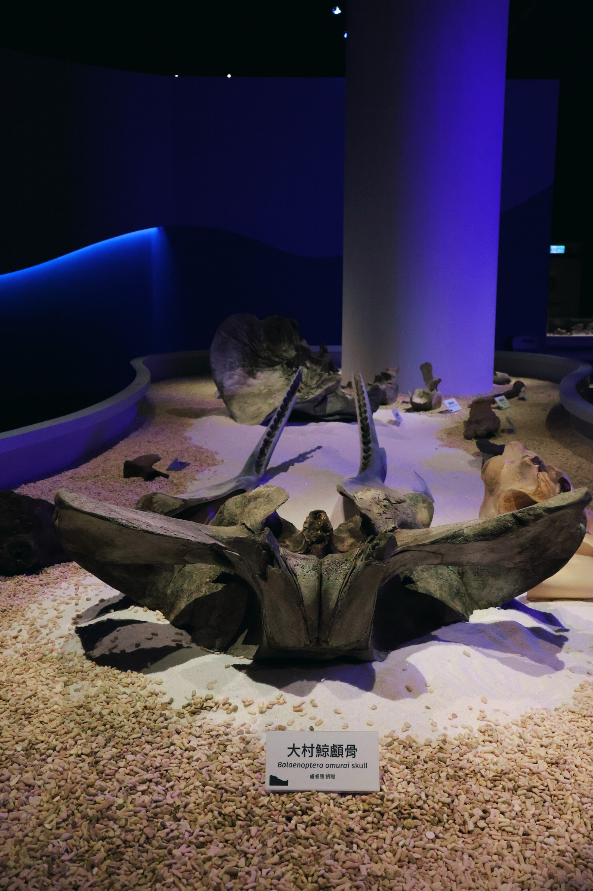
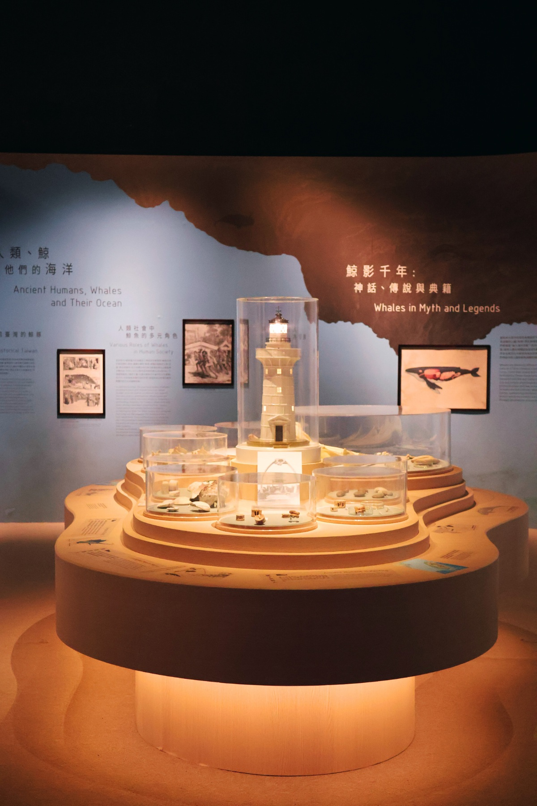
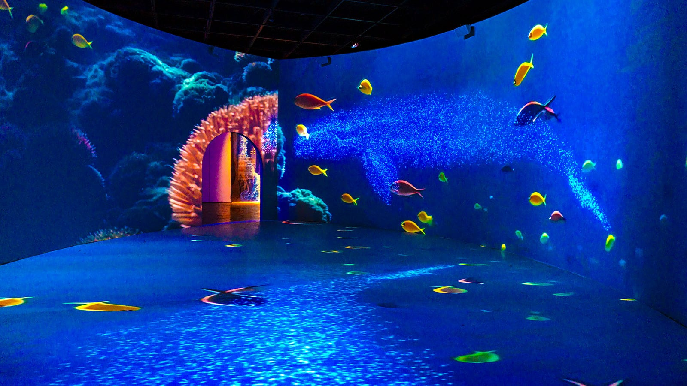

台灣的前世今生
恆春西台地的地層與岩石組成，闡述臺灣島從海底沉積物抬升的過程。
化石寶庫
展示恆春出土的花豹、老虎、象、鹿、無脊椎動物及鯨豚化石散骨。
鵝鑾鼻神社鯨骨鳥居
展場重現恆春墾丁鵝鑾鼻神社的鯨骨鳥居。
清修實驗室
特展打造化石清修展演室，呈現古生物清修、化石整理的重要幕後工作。
鯨豚化石
 鯨豚的骨頭化石展示區域。
新白鯨記
回顧日治時期恆春半島南灣作為重要捕鯨基地的歷史，探討鯨豚與人類文化間的深厚關係，並展示鵝鑾鼻鯨骨鳥居及大板埒等遺址。
沉浸式展場
展場設置沉浸式科技藝術劇場，透過環場投影、新媒體藝術，展演鯨魚從誕生到鯨落的生命軌跡，融入海洋污染與生態破壞議題，引發觀眾反思。